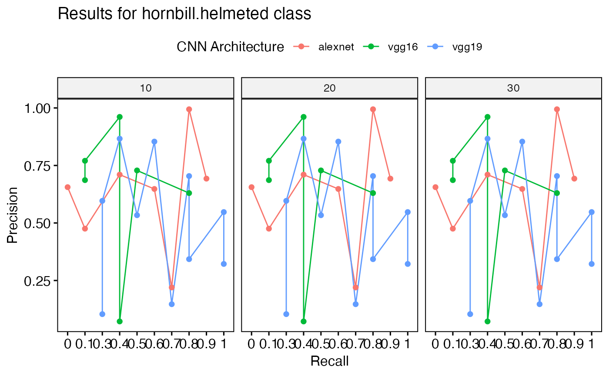

R/get_best_performance.R
get_best_performance.RdGiven the path to a directory of performance tables, this function reads in the tables, combines them, and extracts the best performance results based on various criteria.
get_best_performance(
performancetables.dir,
model.type = "multi",
class = "hornbill.helmeted",
Thresh.val = 0.5
)Path to the directory containing the performance tables.
Type of model architecture. If 'multi' then will treat as multiclass, otherwise will treat as binary.
Specific class for evaluation.
Threshold value for evaluation.
A list containing best F1 scores, best precision results, best recall results, and plots visualizing these metrics.
'train_CNN_binary' and 'train_CNN_multi' output a directory of 'performance tables'. This function requres that directory as input.
{
# Simulate data for performance tables
set.seed(123)
#' Set directory
performance_tables_dir <- paste(tempdir(), "/performance_tables/", sep = "")
#' Create directory for performance tables (NOTE THIS IS FOR TESTING ONLY)
dir.create(performance_tables_dir, showWarnings = FALSE, recursive = TRUE)
#' Define list of model architectures
architectures <- c("alexnet", "vgg16", "vgg19")
#' Define list of training datasets
training_datasets <- c("Dataset1", "Dataset2", "Dataset3")
#' Create performance tables
for (arch in architectures) {
for (td in training_datasets) {
#' Generate random performance metrics
metrics <- data.frame(
Class = rep(c("hornbill.helmeted", "other.class"), each = 5),
"Training Data" = rep(td, 10),
"CNN Architecture" = rep(arch, 10),
Threshold = runif(10, 0, 1),
F1 = runif(10, 0, 1),
Precision = runif(10, 0, 1),
Recall = runif(10, 0, 1),
AUC = runif(10, 0, 1),
`N epochs` = rep(c(10, 20, 30), each = 10)
)
# Reassign column names
colnames(metrics) <- c(
"Class",
"Training Data", "CNN Architecture",
"Threshold", "F1", "Precision",
"Recall", "AUC", "N epochs"
)
#' Write data to CSV file
filename <- paste0(performance_tables_dir, arch, "_", td, ".csv")
write.csv(metrics, filename, row.names = FALSE)
}
}
#' Call the function with default parameters
results <- get_best_performance(performancetables.dir = performance_tables_dir, )
# NOTE: Results will not make sense as it is random
#' message the best F1 scores
message("Best F1 scores:")
print(results$best_f1)
#' message the best precision results
message("Best precision results:")
print(results$best_precision)
#' message the best recall results
message("Best recall results:")
print(results$best_recall)
#' message the best AUC results
message("Best AUC results:")
print(results$best_auc)
#' Plot F1 scores
print(results$f1_plot)
#' Plot precision-recall curve
print(results$pr_plot)
}
#> Evaluating performance for hornbill.helmeted Here are the present classes: hornbill.helmetedEvaluating performance for hornbill.helmeted Here are the present classes: other.class
#> Best F1 scores:
#> # A tibble: 9 × 9
#> Class `Training Data` `CNN Architecture` Threshold F1 Precision Recall
#> <chr> <chr> <chr> <dbl> <dbl> <dbl> <dbl>
#> 1 hornbill.… Dataset1 vgg19 0.779 0.713 0.147 0.738
#> 2 hornbill.… Dataset1 vgg19 0.779 0.713 0.147 0.738
#> 3 hornbill.… Dataset1 vgg19 0.779 0.713 0.147 0.738
#> 4 hornbill.… Dataset2 vgg19 0.515 0.897 0.866 0.373
#> 5 hornbill.… Dataset2 vgg19 0.515 0.897 0.866 0.373
#> 6 hornbill.… Dataset2 vgg19 0.515 0.897 0.866 0.373
#> 7 hornbill.… Dataset3 alexnet 0.954 0.948 0.220 0.737
#> 8 hornbill.… Dataset3 alexnet 0.954 0.948 0.220 0.737
#> 9 hornbill.… Dataset3 alexnet 0.954 0.948 0.220 0.737
#> # ℹ 2 more variables: AUC <dbl>, `N epochs` <dbl>
#> Best precision results:
#> # A tibble: 9 × 9
#> Class `Training Data` `CNN Architecture` Threshold F1 Precision Recall
#> <chr> <chr> <chr> <dbl> <dbl> <dbl> <dbl>
#> 1 hornbill.… Dataset1 alexnet 0.883 0.573 0.994 0.795
#> 2 hornbill.… Dataset1 alexnet 0.883 0.573 0.994 0.795
#> 3 hornbill.… Dataset1 alexnet 0.883 0.573 0.994 0.795
#> 4 hornbill.… Dataset2 vgg16 0.962 0.253 0.961 0.428
#> 5 hornbill.… Dataset2 vgg16 0.962 0.253 0.961 0.428
#> 6 hornbill.… Dataset2 vgg16 0.962 0.253 0.961 0.428
#> 7 hornbill.… Dataset3 vgg16 0.531 0.516 0.770 0.0580
#> 8 hornbill.… Dataset3 vgg16 0.531 0.516 0.770 0.0580
#> 9 hornbill.… Dataset3 vgg16 0.531 0.516 0.770 0.0580
#> # ℹ 2 more variables: AUC <dbl>, `N epochs` <dbl>
#> Best recall results:
#> # A tibble: 0 × 9
#> # ℹ 9 variables: Class <chr>, Training Data <chr>, CNN Architecture <chr>,
#> # Threshold <dbl>, F1 <dbl>, Precision <dbl>, Recall <dbl>, AUC <dbl>,
#> # N epochs <dbl>
#> Best AUC results:
#> # A tibble: 9 × 9
#> Class `Training Data` `CNN Architecture` Threshold F1 Precision Recall
#> <chr> <chr> <chr> <dbl> <dbl> <dbl> <dbl>
#> 1 hornbill.… Dataset1 vgg19 0.779 0.713 0.147 0.738
#> 2 hornbill.… Dataset1 vgg19 0.779 0.713 0.147 0.738
#> 3 hornbill.… Dataset1 vgg19 0.779 0.713 0.147 0.738
#> 4 hornbill.… Dataset2 vgg19 0.515 0.897 0.866 0.373
#> 5 hornbill.… Dataset2 vgg19 0.515 0.897 0.866 0.373
#> 6 hornbill.… Dataset2 vgg19 0.515 0.897 0.866 0.373
#> 7 hornbill.… Dataset3 vgg16 0.531 0.516 0.770 0.0580
#> 8 hornbill.… Dataset3 vgg16 0.531 0.516 0.770 0.0580
#> 9 hornbill.… Dataset3 vgg16 0.531 0.516 0.770 0.0580
#> # ℹ 2 more variables: AUC <dbl>, `N epochs` <dbl>
